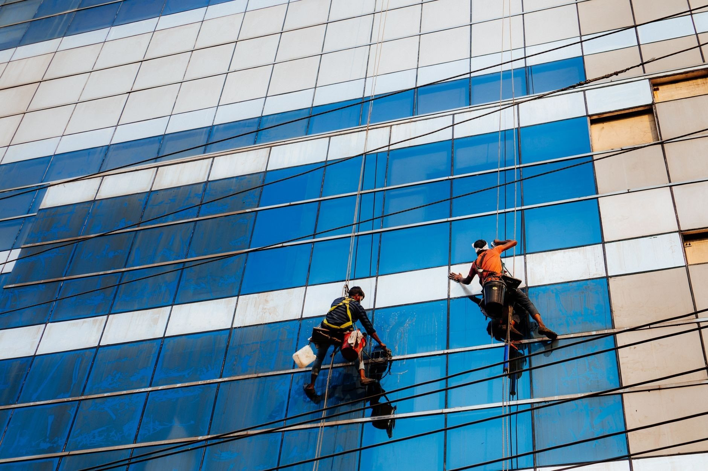
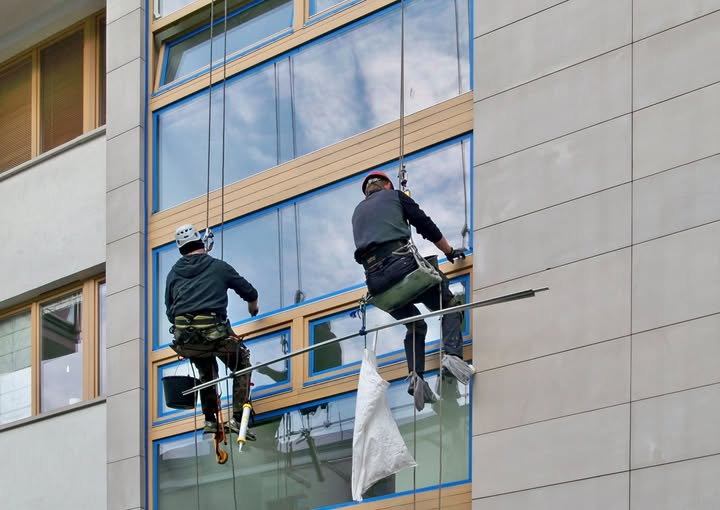
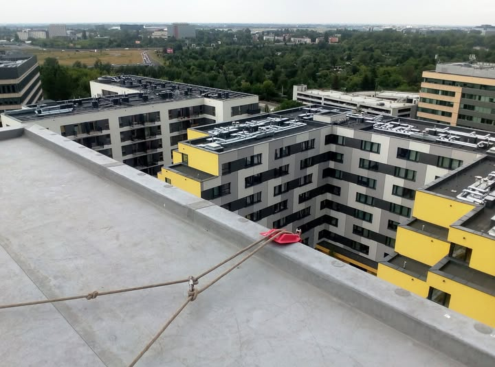

Dostęp linowy zamiast rusztowań - szybciej, taniej i bez rozkładania placu budowy. Mycie elewacji, prace dekarskie, remonty i montaże na każdej wysokości, z pełnym zabezpieczeniem i ubezpieczeniem.

Duklin to ekipa, dla której praca na linach jest naturalnym środowiskiem. Wchodzimy tam, gdzie rusztowanie jest zbyt drogie, zbyt wolne albo po prostu się nie zmieści - i robimy swoje: bezpiecznie, dokładnie i bez zostawiania bałaganu.
Dostęp linowy znaczy mniej kosztów, krótszy czas i zero rozkładania placu budowy. Pracujemy z pełnym sprzętem asekuracyjnym i ubezpieczeniem, a po skończonej pracy obiekt wraca do użytku od ręki.
Poznaj nas →Jedna ekipa na linach zamiast rusztowań i kilku podwykonawców - od mycia szyb po skomplikowane prace remontowo-budowlane na wysokości.
Elewacje, dachy i prace na linach na budynkach naszych klientów - od bloków i kamienic po nowoczesne biurowce.



Napisz lub zadzwoń - odpowiemy z propozycją i terminem, bez zobowiązań.